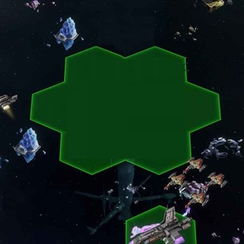

The first thing to do when relocating is to capture 7 grids in a circle, the same shape as your base in a spot on a
map that looks peacefull and quiet.
Then click the center tile -> assemble and chose the relocate icon. Relocation either uses a station anchoring
device, you gen one for free as a starter mission
or 900 nova credits from the interbus market. Or 1000 nova credits if you relocate directly without a station
anchoring device.
Note: All ships must be back at base to relocate. Currently not certain if you can relocate while captured or with
shields on. I believe so but I can't confirm.